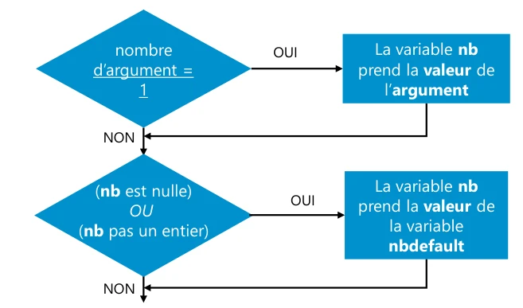
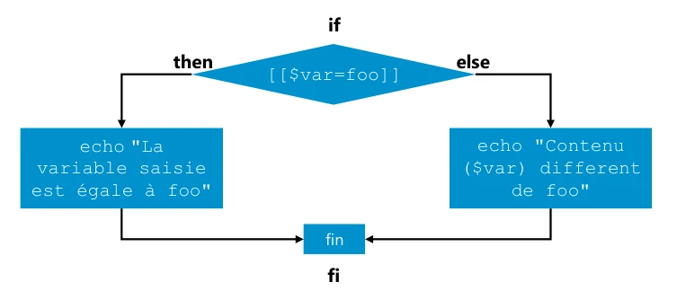
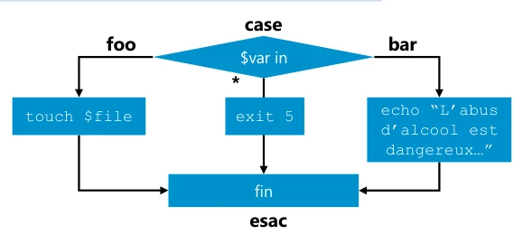

Module 06 — Exécution conditionnelle¶
La transcription du support Drive et l’aide pédagogique sont séparées pour rendre leur provenance explicite.
SOURCE DRIVE · TRANSCRIPTION DU SUPPORT
Le contenu des documents du dossier TSSR est transcrit ci-dessous, page par page. Les textes et tableaux sont intégrés à la page Web. Aucun fichier PDF, aucune diapositive entière ni aucune reproduction de page n’est affiché. Seuls des croquis ou visuels isolés et vérifiés peuvent accompagner la transcription. Les versions et les consignes restent celles des supports de formation. Les compléments IA sont conservés dans leur onglet distinct.
Support · Module 06 - Support de cours · 18 pages transcrites
Le texte, les tableaux et le code sont transcrits d’après le PDF de formation. Les sauts de ligne suivent la présentation du support. Les exemples historiques sont commentés dans le cours optimisé.
Page 1
Module 06 – Exécution conditionnelle (test, if, case)
Objectifs
- Comprendre les structures conditionnelles
- Écrire des tests
- Comparer des nombres, des chaînes
Page 2
Contextes outils et structures
de conditionnement
Contextes outils et structures de conditionnement
Dans de nombreux cas pratiques, la réalisation d’actions est conditionnée.


Dans cet exemple, la valeur de la variable nb est conditionnée au nombre d’arguments passé au script puis à la présence ou non de contenu dans cette variable.
| Condition | OUI | NON |
|---|---|---|
| nombre d’argument = 1 | La variable nb prend la valeur de l’argument. | Vérifier le contenu de nb. |
| (nb est nulle) OU (nb pas un entier) | La variable nb prend la valeur de la variable nbdefault. | Poursuivre. |
Page 3
Contextes outils et structures de conditionnement
- En Scripting Shell, pour traduire cet algorithme, nous utiliserons :
- Une structure de contrôle comme la structure if
- Une expression de test (qui sera intégrée) à la structure de contrôle.
- Ainsi, la première condition serait traduite ainsi :
| Structure de contrôle if | Test de la condition | Structure complète |
|---|---|---|
| if condition ;then nb=$1 fi | [[ $nbarg –eq 1 ]] | if [[ $nbarg –eq 1 ]] ; then nb=$1 fi |
- Dans ce module seront successivement abordées la structure if puis les expressions de tests.
L’instruction if
Page 4
L’instruction if
L’instruction if est utilisée pour structurer la réalisation conditionnée de commandes.


Si la condition est remplie, alors je fais telle action, sinon je fais telle action. Fin du si.
if [[$var=foo]]
then
echo "La variable saisie est égale à foo"
else
echo "Contenu ($var) different de foo"
fiL’instruction if
- Cette instruction requiert au minimum :
- Un début : if
- L’exécution d’une commande (un test de condition par exemple)
- L’exécution d’au moins une action si la condition est vérifiée : then
- Une fin : fi
- Cette instruction peut être complétée par :
- L’exécution d’autres actions si la condition est vérifiée
- L’exécution d’actions à réaliser si la condition n’est pas vérifiée : else
Page 5
L’instruction if
Convention de structure de la boucle if
- Il existe 2 syntaxes pour l’écriture de la structure if :
Moderne Classique
if conditionif condition ; thenthenAction1action1elseelseAction2action2fi- Dans ce support, la forme moderne de la structure sera prise pour les exemples.
- Mais vous pouvez choisir la méthode de votre choix.
L’instruction if
Utilisation minimale de if
- Dans l’exemple ci-dessous, la condition de réalisation de l’action d’affichage est conditionnée par le résultat du test.
if [[ "$LOGNAME" = root ]] ; then
echo "Ne pas se connecter en root"
fi- Autre exemple d’utilisation conditionné par le code retour d’une commande (ls) :
if ls /tmp ; then
echo "/tmp existe"
fiPage 6
L’instruction if
Utilisation de if avec else
if s’utilise souvent avec else pour choisir une action ou une autre
if [[ "$LOGNAME" = root ]] ; then
echo "Ne pas se connecter en root"
else
echo "Bienvenue sur la machine $HOSTNAME"
fiL’instruction if
Utilisation de if avec else
Il est possible de stipuler plusieurs actions dans une structure if :
if [[ "$LOGNAME" = root ]] ; then
echo "Ne pas se connecter en root"
echo "Le script va quitter"
exit 1
else
echo "Bienvenue sur la machine $HOSTNAME"
echo "Le script continue"
fiPage 7
L’instruction if
Imbrication de structures if
- Il est possible d’imbriquer des structures if entre elles. Dans l’exemple ci-dessous, on fait d’autres tests si le premier n’est pas rempli.
- Dans le cas d’imbrication d’un if dans un else, on peut utiliser la structure imbriquée elif.
Imbrication de structures if
Utilisation du elif
if <condition> ; then
<action>
else elif <condition> ; then
if <condition> ; then <action>
else<action>
<action>else
<action>fi# fin commune des 2 iffi # fin du second if
fi# fin du premier ifDémo
L'instruction if
Page 8
Évaluation des conditions
Les commandes de tests
- Le conditionnement de commandes s’appuie sur l’évaluation de conditions.
- Afin d’évaluer une ou plusieurs conditions, il est possible d’utiliser les commandes suivantes :
| Syntaxe | Description dans le support |
|---|---|
| test condition | Commande externe de test utilisable quel que soit le Shell |
| [ condition ] | Identique à la commande test |
| [[ condition ]] | Commande interne à certains Shells (dont le Bash) qui prend en charge des fonctionnalités supplémentaires |
| (( condition )) | Commande réservée à l’utilisation de tests arithmétiques |
Page 9
Les commandes de tests
- Suite à l’exécution de ces commandes, leur code retour peut avoir pour valeur :
- 0 : l’expression est vraie
- 1 : l’expression est fausse
- Dans ce cours, les tests sont réalisés au moyen de [[ ]].
- Certains éléments abordés ne sont pas pris en charge par les autres commandes de tests. [ ] et test
Critères d’évaluation
- Lors de l’évaluation d’une condition, les critères d’évaluation sont liés au type d’élément à évaluer, celui-ci pouvant être :
- Un entier (chiffre ou nombre)
- Une chaîne (mot ou phrase)
- Une composante du système de fichier (fichier, répertoire, etc.)
- Les principaux opérateurs de tests sont présentés dans ce cours.
Page 10
Critères d’évaluation
Opérateurs de comparaison sur les entiers
- Prendre garde à ce que la variable testée soit déclarée en type entier (typeset –i variable).
Comparaison sur les entiers
| Élément | Signification dans le support |
|---|---|
| -eq | égalité |
| -ne | différence |
| -gt | supérieur |
| -ge | supérieur ou égal |
| -lt | inférieur |
| -le | inférieur ou égal |
if [[ $nbre –eq 2 ]] ; then
echo 'nombre choisi : 2'
fiCritères d’évaluation
Opérateurs de comparaison sur les chaînes
if [[ $prenom = sofia ]] ; thenComparaison sur les chaînes
| Élément | Signification dans le support |
|---|---|
| = | égalité |
| != | différence |
| -n $nomvar | variable non nulle |
| -z $nomvar | variable nulle |
echo 'Bienvenue Sofia'
fi
if [[ -z $prenom ]] ; then
echo 'Merci de saisir
votre prénom'
fiPage 11
Critères d’évaluation
Opérateurs de comparaison sur les fichiers
if [[ -d $rep ]] ; thenComparaison sur les fichiers
| Élément | Signification dans le support |
|---|---|
| -d nomrep | répertoire |
| -f nomfic | fichier ordinaire |
| -w nomfic | droit d’écriture |
| -r nomfic | droit de lecture |
| -x nomfic | droit d’exécution |
| -s nomfic | taille de nomfich > 0 |
ls -l $rep
fi
if [[ -f $fic ]] ; then
cat $fic
else
echo "$fic absent"
fiCombinaison de critères
- Il est possible de cumuler plusieurs critères au sein d’un même test.
- On utilise alors les options suivantes :
| Opérateur | Combinaison de critères |
|---|---|
| && | et logique |
| || | ou logique |
| ! | négation |
| ( ) | regroupement |
if [[ -f fic1 && ( -d rep1 || -d rep2 ) ]] ; then
echo "fic1 est présent, ainsi que rep1 ou rep2"
FiPage 12
Les caractères spéciaux dans les chaînes
Les caractères spéciaux dans les chaînes
Métacaractères du Shell
- Les expressions de test sont interprétées par le Shell.
- Il est donc possible d’utiliser des caractères spéciaux dans celles-ci.
- Rappel :
| Motif | Signification |
|---|---|
| * | 0 à n caractères |
| ? | 1 caractère quelconque |
| […] | 1 caractère parmi ceux entre crochets |
| [^…] | 1 caractère autre que ceux indiqués entre crochets (ou [!...]) |
Page 13
Facteurs d’occurrence
Facteurs d’occurence
| Motif | Facteur d’occurrence |
|---|---|
| ?(…) | 0 à 1 fois l’expression |
| *(…) | 0 à n fois l’expression |
| +(…) | 1 à n fois l’expression |
| @(…) | 1 fois l’expression |
| !(…) | 0 fois l’expression |
| *(…|…) | De 0 à n fois l’expression 1 ou l’expression 2. Valable également pour les caractères ? * + @ ! |
chaine=+123
if [[ "$chaine" = ?([+-])+([0-9]) ]] ; then
echo "$chaine est un nombre valide"
fiPour la prise en compte de facteurs d’occurrences, l’option extglob doit être activée dans le Shell d’interprétation du script.
$ shopt
$ shopt -s extglobIllustration d’un cas pratique
Page 14
Illustration d’un cas pratique
- Illustration de test valide ou non une expression :
[[ -d /data ]] && {
mkdir /data/perso
cp -a /home/penthium/documents/* /data/perso
}- Dans cet exemple, le test [[ -d /data ]] vérifie l’existence ou non du répertoire /data
- Si le répertoire existe, le code retour de test est égal à 0. Le regroupement de commandes qui suit est alors effectué.
- S’il n’existe pas, le code de sortie test diffère de 0. Le regroupement de commandes est ignoré.
Illustration d’un cas pratique
- Cet exemple pourrait être intégré dans une instruction if :
if [[ -d /data ]] ; then
mkdir /data/perso
cp -a /home/penthium/documents/* /data/perso
fiPage 15
L'instruction if
Démo
Les opérateurs de tests
La structure case
Page 16
La structure case
La structure de contrôle case est adaptée au test d’un contenu (généralement stocké dans une variable) pouvant contenir un ensemble de valeurs et des actions liées à ces valeurs.
La structure case
Algorithme d’illustration
La variable var ($var) peut contenir les valeurs : « foo », « bar » ou toute autre chaîne.
| Valeur de $var | Action | Exemple |
|---|---|---|
| foo | Une action de création de fichiers est réalisée | touch $file |
| bar | Une action d’affichage est réalisée | echo “L’abus d’alcool est dangereux…” |
| Toute autre valeur (*) | Sortie du script avec un code d’erreur | exit 5 |
Début du case. On compare la valeur de $var à "foo" ou à "bar" ou à "*". Si la valeur est "foo" je fais une action. Si la valeur est "bar" je fais une autre action. Si la valeur est "*" je fais une troisième action. Fin du case.
case $var in → esac


Page 17
La structure case
Syntaxe d’utilisation
case $nomvar in
expr)
action1
action2
;;
expr2)
action
;;
esacLa structure case
Exemple d’utilisation
case $saisie in
p)La liste de valeurs possibles est
echo "la lettre est p"interprétée par le Shell, ce qui autorise
;;l’utilisation de métacaractères ou
[0-9])d’expressions complexes.
echo "un chiffre"
;;Pour le premier des cas verifiés, les
a|b)
echo "a ou b"actions qui lui sont associées sont
echo "\?"effectuées suivi de la sortie
;;immédiate de la structure. Aucun
*)autre cas ne sera appliqué.
echo "n’importe quel autre caractère"
;;
esacPage 18
La structure case
Démo
La structure case
Référence du document : 1vBhU461pGTtCLHLiCRKTvUCzXhMkCbQj · SHA-256 e712a8ded12fb87e…
Complément IA / externe au cours — fiche pédagogique du portail
Cette fiche contient une reformulation et des aides d’apprentissage rédigées par IA. Elle est distincte de la transcription des documents du Drive et ne la remplace pas. Les schémas de synthèse de cette fiche sont des illustrations IA / externes au cours, sauf les captures explicitement attribuées à un document source.
Les parties ci-dessous reprennent le cours original, dans le même ordre. Les encadrés et les schémas répètent ses formulations.
Parcours de lecture¶
- Support · Module 06 - Support de cours · 18 pages transcrites
- Module 06 – Exécution conditionnelle (test, if, case)
- Objectifs
- Contextes outils et structures
- de conditionnement
- L’instruction if
- Évaluation des conditions
- La structure case
- Enchaînements conditionnels
- Compte utilisateur
- Objectifs
- Énoncé
- Enchaînements conditionnels
- Compte utilisateur
- Objectifs
- Énoncé
Visuel externe
Illustration IA / externe au cours — schéma pédagogique de synthèse.
SOURCE DRIVE · TRANSCRIPTION DU SUPPORT
Le contenu des documents du dossier TSSR est transcrit ci-dessous, page par page. Les textes et tableaux sont intégrés à la page Web. Aucun fichier PDF, aucune diapositive entière ni aucune reproduction de page n’est affiché. Seuls des croquis ou visuels isolés et vérifiés peuvent accompagner la transcription. Les versions et les consignes restent celles des supports de formation. Les compléments IA sont conservés dans leur onglet distinct.
Support · Module 06 - Support de cours · 18 pages transcrites¶
À retenir
Le texte, les tableaux et le code sont transcrits d’après le PDF de formation.
Le texte, les tableaux et le code sont transcrits d’après le PDF de formation. Les sauts de ligne suivent la présentation du support. Les exemples historiques sont commentés dans le cours optimisé.
Page 1¶
Module 06 – Exécution conditionnelle (test, if, case)¶
Objectifs¶
À retenir
Comprendre les structures conditionnelles Écrire des tests Comparer des nombres, des chaînes
Visuel externe
Illustration IA / externe au cours — schéma pédagogique de synthèse.
- Comprendre les structures conditionnelles
- Écrire des tests
- Comparer des nombres, des chaînes
Page 2¶
Contextes outils et structures¶
de conditionnement
Contextes outils et structures de conditionnement¶
À retenir
Dans de nombreux cas pratiques, la réalisation d’actions est conditionnée.
Exemple
Dans cet exemple, la valeur de la variable nb est conditionnée au nombre d’arguments passé au script puis à la présence ou non de contenu dans cette variable.
Dans de nombreux cas pratiques, la réalisation d’actions est conditionnée.
Choix de la valeur de nb selon les arguments et leur contenu.
Dans cet exemple, la valeur de la variable nb est conditionnée au nombre d’arguments passé au script puis à la présence ou non de contenu dans cette variable.
| Condition | OUI | NON |
|---|---|---|
| nombre d’argument = 1 | La variable nb prend la valeur de l’argument. | Vérifier le contenu de nb. |
| (nb est nulle) OU (nb pas un entier) | La variable nb prend la valeur de la variable nbdefault. | Poursuivre. |
Page 3¶
Contextes outils et structures de conditionnement¶
À retenir
En Scripting Shell, pour traduire cet algorithme, nous utiliserons : Une structure de contrôle comme la structure if Une expression de test (qui sera intégrée) à la structure de contrôle.
Visuel externe
Illustration IA / externe au cours — schéma pédagogique de synthèse.
- En Scripting Shell, pour traduire cet algorithme, nous utiliserons :
- Une structure de contrôle comme la structure if
- Une expression de test (qui sera intégrée) à la structure de contrôle.
- Ainsi, la première condition serait traduite ainsi :
| Structure de contrôle if | Test de la condition | Structure complète |
|---|---|---|
| if condition ;then nb=$1 fi | [[ $nbarg –eq 1 ]] | if [[ $nbarg –eq 1 ]] ; then nb=$1 fi |
- Dans ce module seront successivement abordées la structure if puis les expressions de tests.
L’instruction if¶
Page 4¶
L’instruction if¶
À retenir
L’instruction if est utilisée pour structurer la réalisation conditionnée de commandes.
L’instruction if est utilisée pour structurer la réalisation conditionnée de commandes.
Les deux branches du test if puis leur point de convergence.
Si la condition est remplie, alors je fais telle action, sinon je fais telle action. Fin du si.
if [[$var=foo]]
then
echo "La variable saisie est égale à foo"
else
echo "Contenu ($var) different de foo"
fi
L’instruction if¶
Visuel externe
Illustration IA / externe au cours — schéma pédagogique de synthèse.
- Cette instruction requiert au minimum :
- Un début : if
- L’exécution d’une commande (un test de condition par exemple)
- L’exécution d’au moins une action si la condition est vérifiée : then
- Une fin : fi
- Cette instruction peut être complétée par :
- L’exécution d’autres actions si la condition est vérifiée
- L’exécution d’actions à réaliser si la condition n’est pas vérifiée : else
Page 5¶
L’instruction if¶
Convention de structure de la boucle if¶
À retenir
Il existe 2 syntaxes pour l’écriture de la structure if : Moderne Classique Dans ce support, la forme moderne de la structure sera prise pour les exemples.
Visuel externe
Illustration IA / externe au cours — schéma pédagogique de synthèse.
- Il existe 2 syntaxes pour l’écriture de la structure if :
Moderne Classique
- Dans ce support, la forme moderne de la structure sera prise pour les exemples.
- Mais vous pouvez choisir la méthode de votre choix.
L’instruction if¶
Utilisation minimale de if¶
À retenir
Dans l’exemple ci-dessous, la condition de réalisation de l’action d’affichage est conditionnée par le résultat du test.
- Dans l’exemple ci-dessous, la condition de réalisation de l’action d’affichage est conditionnée par le résultat du test.
- Autre exemple d’utilisation conditionné par le code retour d’une commande (ls) :
Page 6¶
L’instruction if¶
Utilisation de if avec else¶
if s’utilise souvent avec else pour choisir une action ou une autre
if [[ "$LOGNAME" = root ]] ; then
echo "Ne pas se connecter en root"
else
echo "Bienvenue sur la machine $HOSTNAME"
fi
L’instruction if¶
Utilisation de if avec else¶
Il est possible de stipuler plusieurs actions dans une structure if :
if [[ "$LOGNAME" = root ]] ; then
echo "Ne pas se connecter en root"
echo "Le script va quitter"
exit 1
else
echo "Bienvenue sur la machine $HOSTNAME"
echo "Le script continue"
fi
Page 7¶
L’instruction if¶
Imbrication de structures if¶
- Il est possible d’imbriquer des structures if entre elles. Dans l’exemple ci-dessous, on fait d’autres tests si le premier n’est pas rempli.
- Dans le cas d’imbrication d’un if dans un else, on peut utiliser la structure imbriquée elif.
Imbrication de structures if
Utilisation du elif
Démo
L'instruction if
Page 8¶
Évaluation des conditions¶
Les commandes de tests¶
- Le conditionnement de commandes s’appuie sur l’évaluation de conditions.
- Afin d’évaluer une ou plusieurs conditions, il est possible d’utiliser les commandes suivantes :
| Syntaxe | Description dans le support |
|---|---|
| test condition | Commande externe de test utilisable quel que soit le Shell |
| [ condition ] | Identique à la commande test |
| [[ condition ]] | Commande interne à certains Shells (dont le Bash) qui prend en charge des fonctionnalités supplémentaires |
| (( condition )) | Commande réservée à l’utilisation de tests arithmétiques |
Page 9¶
Les commandes de tests¶
- Suite à l’exécution de ces commandes, leur code retour peut avoir pour valeur :
- 0 : l’expression est vraie
- 1 : l’expression est fausse
- Dans ce cours, les tests sont réalisés au moyen de [[ ]].
- Certains éléments abordés ne sont pas pris en charge par les autres commandes de tests. [ ] et test
Critères d’évaluation¶
- Lors de l’évaluation d’une condition, les critères d’évaluation sont liés au type d’élément à évaluer, celui-ci pouvant être :
- Un entier (chiffre ou nombre)
- Une chaîne (mot ou phrase)
- Une composante du système de fichier (fichier, répertoire, etc.)
- Les principaux opérateurs de tests sont présentés dans ce cours.
Page 10¶
Critères d’évaluation¶
Opérateurs de comparaison sur les entiers¶
- Prendre garde à ce que la variable testée soit déclarée en type entier (typeset –i variable).
Comparaison sur les entiers¶
| Élément | Signification dans le support |
|---|---|
| -eq | égalité |
| -ne | différence |
| -gt | supérieur |
| -ge | supérieur ou égal |
| -lt | inférieur |
| -le | inférieur ou égal |
Critères d’évaluation¶
Opérateurs de comparaison sur les chaînes¶
Comparaison sur les chaînes¶
| Élément | Signification dans le support |
|---|---|
| = | égalité |
| != | différence |
| -n $nomvar | variable non nulle |
| -z $nomvar | variable nulle |
Page 11¶
Critères d’évaluation¶
Opérateurs de comparaison sur les fichiers¶
Comparaison sur les fichiers¶
| Élément | Signification dans le support |
|---|---|
| -d nomrep | répertoire |
| -f nomfic | fichier ordinaire |
| -w nomfic | droit d’écriture |
| -r nomfic | droit de lecture |
| -x nomfic | droit d’exécution |
| -s nomfic | taille de nomfich > 0 |
Combinaison de critères¶
- Il est possible de cumuler plusieurs critères au sein d’un même test.
- On utilise alors les options suivantes :
| Opérateur | Combinaison de critères |
|---|---|
| && | et logique |
| // | ou logique |
| ! | négation |
| ( ) | regroupement |
if [[ -f fic1 && ( -d rep1 || -d rep2 ) ]] ; then
echo "fic1 est présent, ainsi que rep1 ou rep2"
Fi
Page 12¶
Les caractères spéciaux dans les chaînes
Les caractères spéciaux dans les chaînes¶
Métacaractères du Shell¶
- Les expressions de test sont interprétées par le Shell.
- Il est donc possible d’utiliser des caractères spéciaux dans celles-ci.
- Rappel :
| Motif | Signification |
|---|---|
| * | 0 à n caractères |
| ? | 1 caractère quelconque |
| […] | 1 caractère parmi ceux entre crochets |
| [^…] | 1 caractère autre que ceux indiqués entre crochets (ou [!...]) |
Page 13¶
Facteurs d’occurrence¶
Facteurs d’occurence¶
| Motif | Facteur d’occurrence |
|---|---|
| ?(…) | 0 à 1 fois l’expression |
| *(…) | 0 à n fois l’expression |
| +(…) | 1 à n fois l’expression |
| @(…) | 1 fois l’expression |
| !(…) | 0 fois l’expression |
| *(…/…) | De 0 à n fois l’expression 1 ou l’expression 2. Valable également pour les caractères ? * + @ ! |
Pour la prise en compte de facteurs d’occurrences, l’option extglob doit être activée dans le Shell d’interprétation du script.
Illustration d’un cas pratique
Page 14¶
Illustration d’un cas pratique¶
- Illustration de test valide ou non une expression :
- Dans cet exemple, le test [[ -d /data ]] vérifie l’existence ou non du répertoire /data
- Si le répertoire existe, le code retour de test est égal à 0. Le regroupement de commandes qui suit est alors effectué.
- S’il n’existe pas, le code de sortie test diffère de 0. Le regroupement de commandes est ignoré.
Illustration d’un cas pratique¶
- Cet exemple pourrait être intégré dans une instruction if :
Page 15¶
L'instruction if¶
Démo
Les opérateurs de tests
La structure case¶
Page 16¶
La structure case¶
La structure de contrôle case est adaptée au test d’un contenu (généralement stocké dans une variable) pouvant contenir un ensemble de valeurs et des actions liées à ces valeurs.
La structure case¶
Algorithme d’illustration¶
La variable var ($var) peut contenir les valeurs : « foo », « bar » ou toute autre chaîne.
| Valeur de $var | Action | Exemple |
|---|---|---|
| foo | Une action de création de fichiers est réalisée | touch $file |
| bar | Une action d’affichage est réalisée | echo “L’abus d’alcool est dangereux…” |
| Toute autre valeur (*) | Sortie du script avec un code d’erreur | exit 5 |
Début du case. On compare la valeur de $var à "foo" ou à "bar" ou à "". Si la valeur est "foo" je fais une action. Si la valeur est "bar" je fais une autre action. Si la valeur est "" je fais une troisième action. Fin du case.
case $var in → esac
Trois branches de l’instruction case pour foo, bar et les autres valeurs.
Page 17¶
La structure case¶
Syntaxe d’utilisation¶
La structure case¶
Exemple d’utilisation¶
La liste de valeurs possibles est
interprétée par le Shell, ce qui autorise
l’utilisation de métacaractères ou
d’expressions complexes.
Pour le premier des cas verifiés, les
actions qui lui sont associées sont
effectuées suivi de la sortie
immédiate de la structure. Aucun
autre cas ne sera appliqué.
Page 18¶
La structure case¶
Démo
La structure case
Référence du document : 1vBhU461pGTtCLHLiCRKTvUCzXhMkCbQj · SHA-256 e712a8ded12fb87e…
| Support · Module 06 - Support de cours · 18 pages transcrites | Le texte, les tableaux et le code sont transcrits d’après le PDF de formation. | | Objectifs | Comprendre les structures conditionnelles Écrire des tests Comparer des nombres, des chaînes | | Énoncé | Analyse des besoins Il vous est demandé de réaliser un script, simplifiant la gestion de comptes utilisateurs. | | Objectifs | Créer un algorithme de solution en réponse à un besoin et cahier des charges donné. | | Énoncé | Pour créer ce script, il faut travailler par étape. |
M06 — Exécution conditionnelle
20 questions
Teste tes connaissances sur ce module.